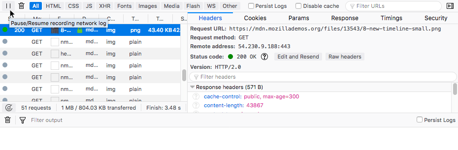

{{ToolsSidebar}}
You can pause and resume the monitoring of network traffic using the pause button.
The Network Monitor has a button that pauses and resumes recording of the current page's network traffic. This is useful in situations where, for example, you are trying to get a stable view of a page for debugging purposes, but under normal circumstances the view keeps evolving due to persistent network requests. The pause button allows you to look at a certain snapshot.
The button can be found at the far left of the main Network Monitor toolbar, and looks like a typical pause button — .
You can see it here in context:

Once pressed, the button changes to a play icon, and you can toggle network traffic recording back on by pressing it again.
The following articles cover different aspects of using the network monitor: